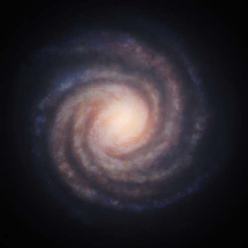

Plieliae SM-C c29-11 B 3
< GGG #44 >
.png)
.png)
.png)
.png)
Discovered By: CMDR ToniM47
Date: 3308-11-03
Description:
A green Class II with little change in color besides a few pink and green clouds near the equator. The planet's 3 moons however give amazing views: The first moon orbits just beyond the outer edge of the GGG's ring system, and the third moon has a high inclination to the rings, providing a close up view from above.
Community Name: Jaded Ghost
| Body Characteristics | |
|---|---|
| Type: | Class II |
| Temperature: | 174.249985 K |
| Mass: | 430.6880 M🜨 |
| Gravity: | 3.11 g |
| Radius: | 74,998 km |
| Rotational Period: | 0.6 d |
| Axial Tilt: | 166.7° |
| Rings: | Yes |
| Moons: | 3 (3 landable) | Region: | Hawking's Gap |
| Distance From Sol: | 10,997.13 Ly |
| Distance to Arrival: | 12,713 Ls |
| Orbital Period: | 450.8 d |
| Orbital Inclination: | -0.92° |
| Orbital Eccentricity: | 0.0026 |
| Semi-Major Axis: | 0.75 AU |
| Argument of Periapsis: | 136.86° |
| Hydrogen: | 72.986122% |
| Helium: | 27.013874% |
| Parent Star(s): | M7 Va |
